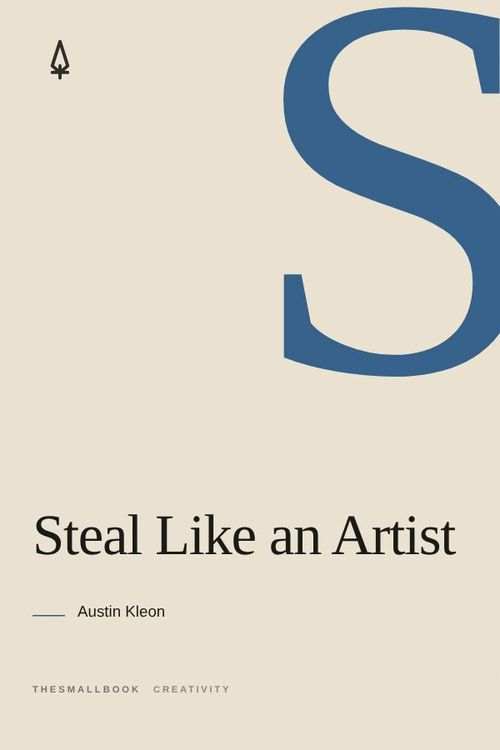
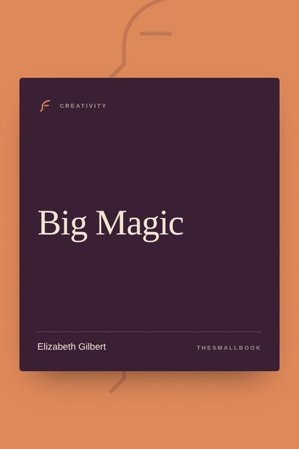

Library › Ask the Library › How do I become more creative?
How do I become more creative?
The short answer
Creativity is not a lightning bolt, it's a habit. Show up daily, steal like an artist, and generate volume: quantity is the road to quality.
The books behind the answer

Steal Like an Artist
Austin Kleon · 2012 · 8 min · 6 lessons
Nothing is original: all creative work builds on what came before. So steal like an artist - with credit, transformation, and love.
- Nothing Is Original: Every artist steals, the trick is stealing from many, then combining until it's yours.

Big Magic
Elizabeth Gilbert · 2015 · 8 min · 6 lessons
You don't need suffering to create. Curiosity, courage and finished work beat talent and torture.
- Done Is Better Than Good: A finished imperfect thing can live and reach people. A perfect one that never ships is a corpse in a drawer.

Originals
Adam Grant · 2016 · 8 min · 6 lessons
Originality is not a personality - it's a set of habits. And procrastinators, doubters and troublemakers often have the edge.
- Quantity Is the Road to Quality: Beethoven wrote 650 works; Picasso made 50,000 pieces. Volume produces the masterpieces.

The War of Art
Steven Pressfield · 2002 · 8 min · 6 lessons
There's a force whose sole mission is to stop you from doing your work. Naming it - Resistance - is half the war.
- Resistance: The enemy is not lack of talent, it's the resistance that shows up every time you sit down to work.
A failure that proves it
Why did Xerox PARC fail?
1979 · BUSINESS · Loss: The entire PC revolution
Xerox invented the future (GUI, mouse, ethernet), then failed to recognize it. Creativity without execution is just a museum.
Inventing it means nothing; commercializing it means everything. Companies don't die from lack of ideas - they die from the distance between the lab and the boardroom.
Also asked in Hindi and Hinglish
People also ask this as: creative kaise banein, naye ideas kahan se layein. The answer on this page stays in simple English, and the live book can be read in Hindi or Hinglish.
Questions people ask next
Can I read this in Hindi?
Yes. This answer is written in simple English. Open any linked book and choose Hindi or Hinglish to read the full lessons in your language, with audio where available.